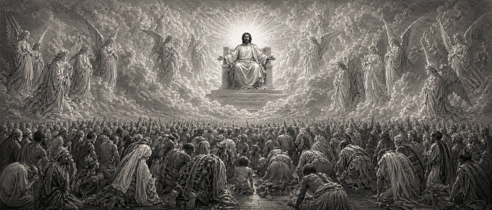

If you died tonight, would you know for sure that you are going to heaven?
This is not meant to scare you. It is meant to bring the most important question into focus.

Bible Mapped is a visual Bible learning project built around place, context, meaning, people, books, maps, and the story that leads to Jesus Christ.
The Bible did not happen nowhere. It happened somewhere. And when you find the place, you start to see the meaning.
None of this matters if Jesus did not rise from the dead. And He did. This guide walks you through the question of salvation with Scripture and clear steps.
This is not meant to scare you. It is meant to bring the most important question into focus.
Many people answer with good works, religion, sincerity, or trying hard. But the Bible starts with our need for grace.
The Bible says every person has sinned before a holy God. We do not start with self-improvement. We start with truth.
Romans 3:23Sin separates us from God, and the wages of sin is death. But the gift of God is eternal life through Jesus Christ our Lord.
Romans 6:23God showed His love toward us in that while we were still sinners, Christ died for us. The center of salvation is what Jesus did.
Romans 5:8The Bible connects salvation to faith in Christ, confession, and calling on the Lord from the heart.
Romans 10:9–10, 13Lord Jesus, I know that I have sinned. I believe You died for my sins and rose again. I turn to You, trust You, and ask You to save me. Thank You for Your grace and forgiveness. Amen.
The prayer is not magic. These words do not save by themselves. What matters is true faith in Jesus Christ — trusting Him from the heart.
The Bible can feel abstract because we are thousands of years removed from the places, languages, empires, and cultures inside it.
Bible Mapped helps close that distance by showing the Bible through geography, history, people, themes, and visual storytelling.
The goal is not just information. The goal is clarity — so that people can understand Scripture better, ask better questions, and see how the whole story points to Jesus Christ.
“The Bible happened somewhere. And when you find the place, you start to see the meaning.”